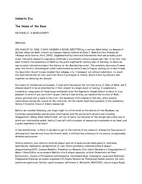

TNXIV asr monastirida yuz bergan sirli qotilliklar haqidagi klassik detektiv roman.
XIV asr monastirida sodir bo'lgan sirli qotilliklar va ularni tergov qilayotgan rohib Uilyam Baskervill haqidagi mashhur roman. Asar o'rta asrlar falsafasi, diniy nizolar va kutubxona sirlarini o'z ichiga olgan murakkab detektiv hikoyadir.